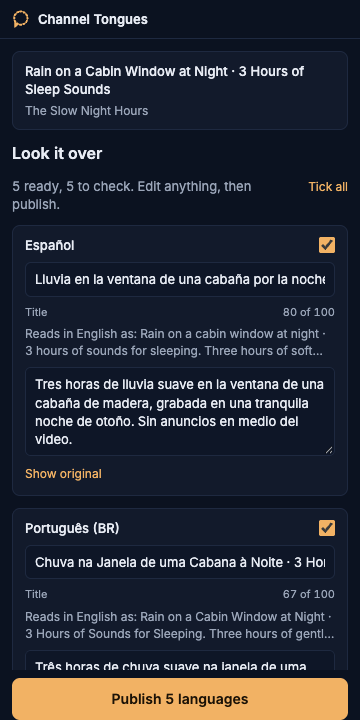
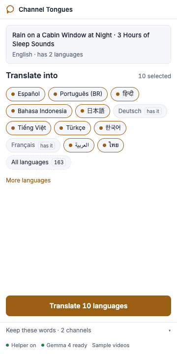
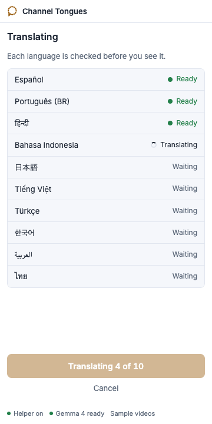
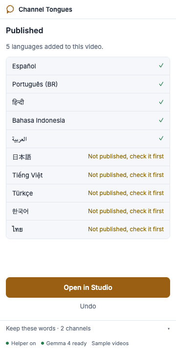
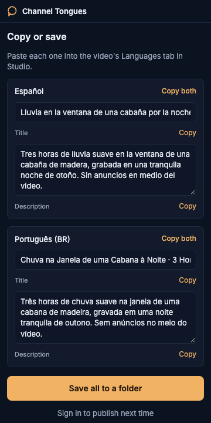

Your channel's titles and descriptions in every language, translated on your own laptop.
YouTube already shows viewers abroad a machine translation of your titles, and you never get to read it. Channel Tongues opens next to YouTube Studio, translates the title and description with Gemma 4 running on your computer, and adds them to the video after you read them over.

What you do
-

Pick languages
The twelve biggest YouTube audiences are ticked for you. Languages the video already has are marked.
-

Translate
About two seconds per language on a recent laptop, each one read back in English so you can check what it says. Links, timestamps, hashtags and your channel name stay as written.
-

Publish
Anything the checks did not trust, including words the read-back shows were added, stays unticked with the reason. A backup comes first, and Undo puts it back.
Demo

Watch the two-minute demo on YouTubeInstall
You need a Mac or Linux machine with Chrome, Go 1.26 and Node 26.
- Install Ollama from ollama.com/download and open it.
- Get the code and build it:
git clone https://github.com/nazboyko/channel-tongues cd channel-tongues && make build - Run the setup. It downloads the model, walks you through your own Google project if you want Channel Tongues to publish for you, shows how to load the extension, and lets Chrome start the helper for you:
bin/tongues setup - Open a video in YouTube Studio and click the Channel Tongues icon. The panel starts the helper by itself.
No Google sign-in at all? Choose "I'll paste it myself" in the panel, then copy the results or save them to a folder.
Questions
Doesn't YouTube translate titles anyway?
It shows some viewers a machine translation you cannot see or edit. Your own translations replace it for those languages.
Why not tags?
YouTube keeps one set of tags per video and has no way to translate them. Titles and descriptions can be translated, so those are what Channel Tongues does.
Where does my data go?
Translation happens on your machine with Gemma 4 through Ollama. If you sign in to publish, the sign-in belongs to your own Google project and lives in a file on your disk; only the final translations go to YouTube. Without signing in, nothing leaves your machine.
Which languages are ticked, and why those?
Spanish, Portuguese (Brazil), Hindi, Indonesian, Japanese, German, Vietnamese, Turkish, Korean, French, Arabic and Thai, ordered by YouTube audience size in DataReportal's early-2025 country estimates. Every other language is one search away, and "All languages" ticks every one YouTube accepts.
How many videos a day?
YouTube's free daily allowance covers about 190 publishes. Channel Tongues stops at about 170 to leave room, and the whole-channel command tells you when to continue.
Which model, and can I change it?
Gemma 4: gemma4:26b when you have downloaded it, gemma4:e4b otherwise. Set TONGUES_MODEL to try another Ollama model.
Why does Google say the app isn't verified?
The app is your own Google project, used only by you, so nobody at Google has reviewed it. Click Continue.